经过数据探索与数据预处理，得到了可以直接建模的数据。根据挖掘目标和数据形式可以建立分类与预测、聚类分析、关联规则、时序模式和离群点识别等模型。
分类与预测
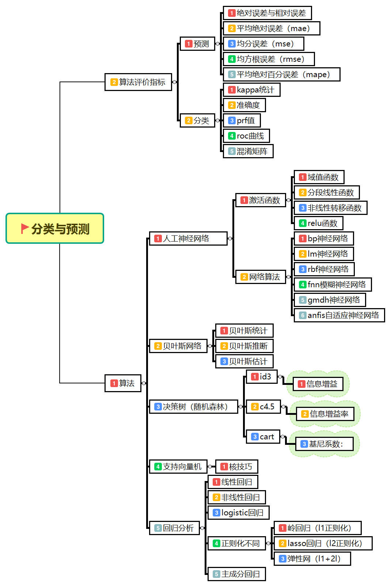
分类和预测是预测问题的两种主要类型：
- 分类主要是预测分类标号（离散属性）；
- 预测主要是建立连续值函数模型，预测给定自变量对应因变量的值。
监督学习的框架图
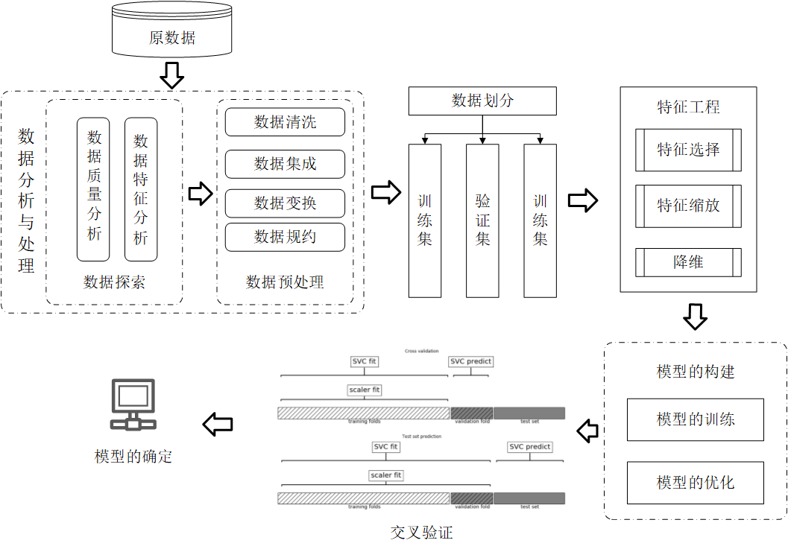
实现过程
- 分类是构造一个分类模型，输入样本的属性值，输出对应的类别，将每个样本映射到预先定义好的类别。
垃圾邮件的过滤 
After the system has been trained to identify emails, when new emails strike your inbox, it’ll automatically be classified as spam or not spam.Classification problems, requires items to be divided into different categories, based on past data. In a way, we’re solving a yes/no problem. Whether something meets its required standards, or whether it’s broken or not and so on.
训练一个识别垃圾邮件的系统,当系统接受到新邮件，将会自动的对新邮件进行是否是垃圾邮件的分类。分类问题是基于过去的数据，将事物划分成不同的类别，总而言之，有点类似“是”或“不是”的问题。或者某件事物是符合标准的还是不符合标准的等等。
- 预测是指建立两种或两种以上变量间相互依赖的函数模型，然后进行预测或控制
天气的预测
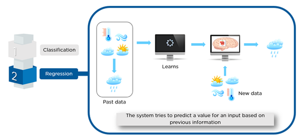
Now with regression problem, the system attempts to predict a value for an input based on past data. You see, unlike classification, we’re predicting a value based on past data, rather than classifying them into different categories. Say you wanted to predict whether it would rain, and if it does, how much rain you would get.
对于回归问题，系统基于过去的数据输入，期望预测出一个值。不同于分类，我们基于数据预测的值，而不是将其划分成不同的类别。想预测是否会下雨,如果会下雨,将会得到多少雨量。
- 两者的区别
:fa-quora:上Waleed Kadous给出的答案：
The key difference is that the output.
For classification is one of a discrete set (e.g. “what type of fruit is this?” or “what medical condition is the person suffering from?”)
For regression the output is a continuous number (e.g. “what’s the expected amount the stock market will go up or down today?” or “how carcinogenic is this compound?”).
A special case of regression is when the output is not just any number, but a number between 0 and 1 where 0 means “this is not going to happen” to 1 being “this will definitely happen”.
Some learning algorithms are targeted at one, others at the other. Many of them have the same core algorithm, but with minor modifications – e.g. decision trees can be easily modified to support regression instead.
Andrew Ng的Machine Learning课程给出两者的解释:
Supervised learning problems are categorized into “regression” and “classification” problems. In a regression problem, we are trying to predict results within a continuous output, meaning that we are trying to map input variables to some continuous function. In a classification problem, we are instead trying to predict results in adiscrete output. In other words, we are trying to map input variables into discrete categories.
总结一下：分类模型和回归模型本质一样，分类模型可将回归模型的输出离散化，回归模型也可将分类模型的输出连续化。
常用的分类和预测算法
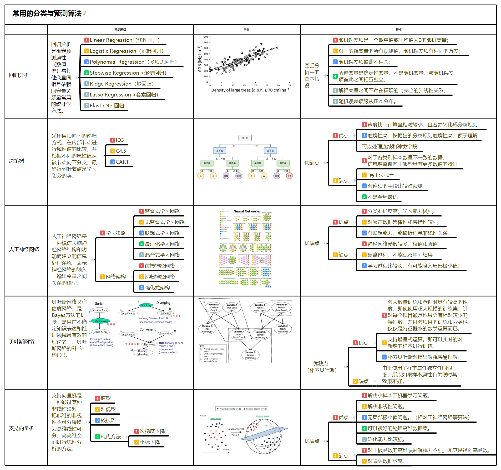
回归分析
回归分析是通过建立模型来研究变量之间相互关系的密切程度、结构状态及进行模型预测的一种有效工具，在工商管理、经济、社会、医学和生物学等领域应用十分广泛。从19世纪初高斯提出最小二乘估计起，回归分析的历史已有200多年。从经典的回归分析方法到近代的回归分析方法，安装研究方法划分，回归分析研究的范围大致如下。
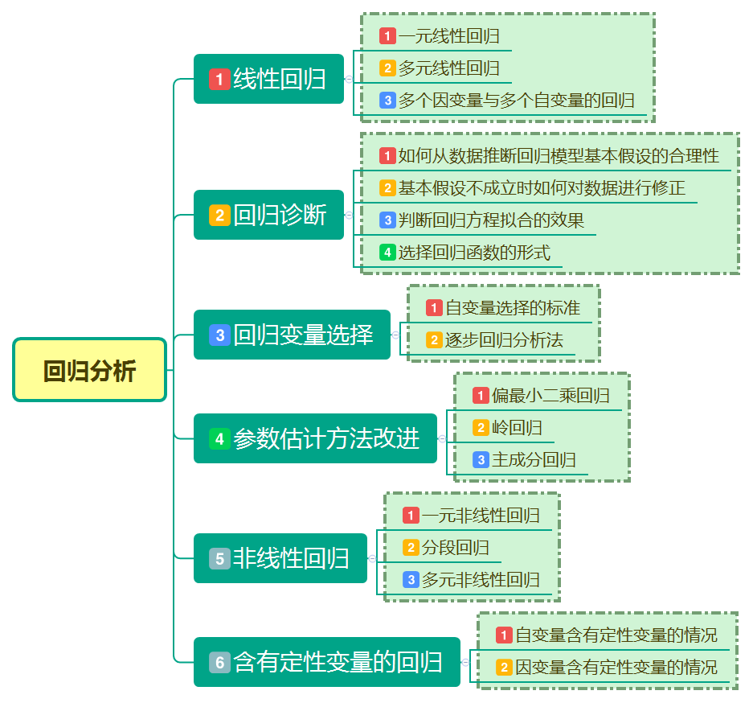
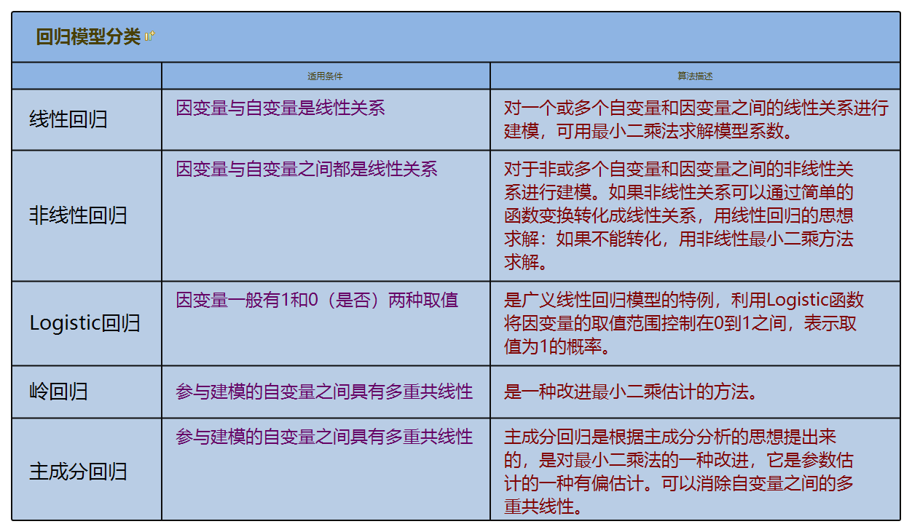
决策树
决策树方法在分类、预测、规则提取等领域有着广泛的应用。决策树是一种树状结构，它的每一个叶节点对应着一个分类，非叶节点对应着在某个属性上的划分，根据样本在该属性上的不同取值将其划分成若干个子集。对于非纯的叶节点，多数类的标号给出到达这个节点的样本所属的类。构造决策树的核心问题是在每一步如何选择适当的属性对样本做拆分。对于一个分类问题，从已知标记的训练样本中学习并构造出决策树是一个自上而下，分而治之的过程。
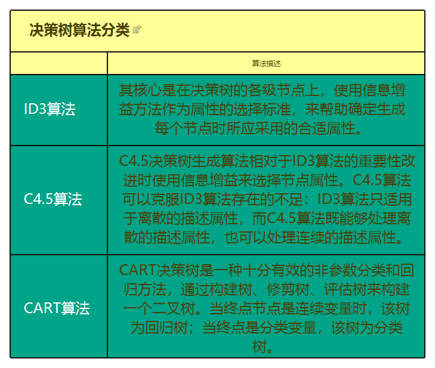
人工神经网络
人工神经网络（ANN）,是模拟生物神经网络进行信息处理的一种数学模型。它以大脑的生理研究成果为基础，其目的在于模拟大脑的某些机理与机制，实现一些特定的功能。
人工神经紊乱的学习也成为训练，指的是神经网络在受到外部环境的刺激下调整神经网络的参数，是神经网络以一种新的方式对外部环境做出反应的一个过程。在分类与预测中，人工神经网络主要使用有指导的学习方式，即给定的训练样本，调整人工神经网络的参数使网络输出接近于已知的样本标记或其它形式的因变量。
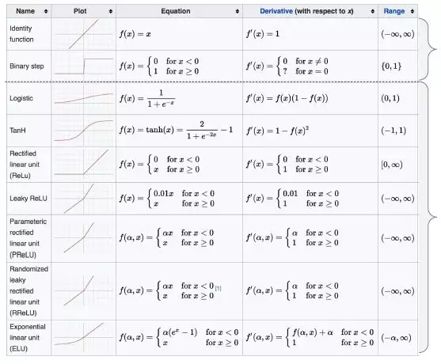
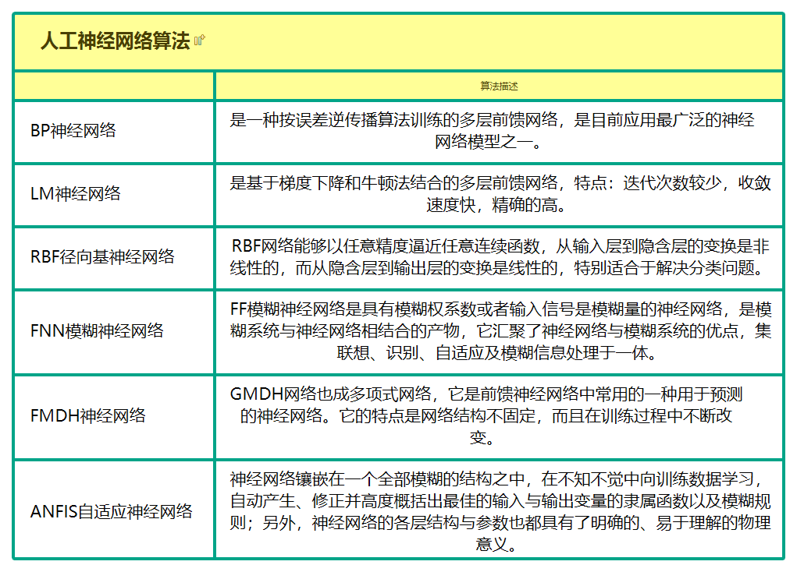
算法评价
分类与预测模型对训练集进行预测而得出的准确率并不能很好地反映预测模型未来的泛化能力，为了有效判断一个预测模型的性能表示，需要一组咩有参予预测模型建立的数据集，并在该数据集上评价预测模型准确率，这组独立的数据集叫作测试集。
回归指标
- 绝对误差和相对误差
设$Y$表示实际值，$\bar{Y}$表示预测值，则称$E$为绝对误差（Absolute Error），计算公式如下：
$$E=Y-\bar{Y}$$
$e$为相对误差（Relative Error），计算公式如下
$$e=\frac{Y-\bar{Y}}{Y}*100\%$$
这是一种直观的误差表示方法。 - 平均绝对误差（MeanAbsoluter，MAE）定义如下：
$$MAE=\frac{1}{n}\sum_{i=1}^{n}|E_{i}|=\sum_{i=1}^{n}|Y_{i}-\bar Y_{i}|$$
式中的各项含义如下：- $MAE:$平均绝对误差。
- $E_{i}:$第i个实际值与预测值的绝对误差。
- $Y_{i}:$第i个实际值。
- $\bar Y_{i}:$第i个预测值。
由于误差有正负，为了避免正负相抵销，故取误差的绝对值进行综合并取其平均数，这是误差分析的综合指标之一。
- 均方误差（Mean Squared Error，MSE）定义如下：
$$MSE=\frac{1}{n}\sum_{i=1}^{n}E_{i}^{2}=\frac{1}{n}\sum_{i=1}^{n}(Y_{i}-\bar Y_{i})^{2}$$
在上式中，$MSE$表示均方差，其他符号同前。
均方误差是预测误差平方之和的平均数，它避免了正负误差不能相加的问题。由于对误差$E$进行了平方，加强了数值大的误差在指标中的作用，从而提高了这个指标的灵敏度，是一大优点。均方误差是误差分析的综合指标之一。 - 均方根误差（Root Mean Squared Error，RMSE）定义如下。
$$RMSE=\sqrt{\frac{1}{n}\sum_{i=1}^{2}E_{i}^2}=\sqrt{\frac{1}{n}\sum_{i=1}^{n}(Y_{i}-\bar Y_{i})^2}$$
上式中，$RMSE$表示均方根误差，其他符合同前。
这是均分误差的平方根，代表了预测值的离散程度，也称为标准误差，最佳拟合情况为$RMSE$=0。均方根误差也是误差分析的综合指标之一。 - 平均绝对百分误差（平均绝对百分误差Mean Absolute Percentage Error，MAPE）定义如下：
$$MAPE=\frac{1}{n}\sum_{i=1}^{n}|\frac{E_{i}}{Y_{i}}|=\frac{1}{n}\sum_{i=1}^{n}|\frac{Y_{i}-\bar Y{i}}{Y_{i}}|$$
上式中，$MAPE$表示平均绝对百分误差。一般认为$MAPE$小于10时，预测精度较高。分类指标
Kappa统计
Kappa统计是比较两个或多个观测者对同一事物，或观测者对同一事物的两次或多次观测结果是否一致，以由于机遇造成的一致性和实际观测的一致性之间的差别大小作为评价基础的统计指标。Kappa统计量和加权统计量不仅可以用于无序和有序分类变量资料的一致性、重现性检验，而且能给出一个反映一致性大小的“量”值。不带加权的Kappa值
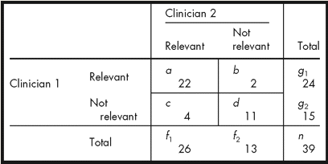$$Kappa=\frac{P_{0}-P_{e}}{1-P_{e}},P_{0}=\frac{a+d}{n},P_{e}=\frac{(a+b)(a+c)+(c+d)(b+d)}{n^2}$$
- PRF值
- Accuracy(精度)：预测正确的比例，$$Accuracy=\frac{TP+TN}{P+N}$$
- TP rate(真正率)-ROC的Y轴：$$TPR=\frac{TP}{P}$$
- FP rate(假正率)-ROC的X轴：$$FPR=\frac{FP}{N}$$
- Precision(准确率)：预测值是Positive的集合中，真正是Positive的比例:$$Precision=\frac{TP}{TP+FN}$$
- Recall(召回率)：观测值为Positive的集合中，被正确判定为Positive的比例:$$recall=\frac{TP}{P}$$
- F值：融合准确度和召回率，$$F-measure=\frac{1}{\frac{1}{precision}+\frac{1}{recall}}$$
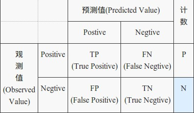
上图这些都属于静态的指标，当正负样本不平衡时它会存在着严重的问题。极端情况下比如正负样本比例为1:99（这在有些领域并不少见），那么一个基 准分类器只要把所有样本都判为负，它就拥有了99%的精确度，但这时的评价指标是不具有参考价值的。
另外就是，现代分类器很多都不是简单地给出一个0或1的分类判定，而是给出一个分类的倾向程度，比如贝叶斯分类器输出的分类概率。对于这些分类器，当你取不同阈值，就可以得到不同的分类结果及分类器评价指标，依此人们又发明出来ROC曲线以及AUC（曲线包围面积）指标来衡量分类器的总体可信度。
- ROC曲线
受试者工作特征（Receiver Operating Chatacteristic，ROC）曲线是一种非常有效的模型评价方法，可为选定临界值给出定量提示。将灵敏度（Sensitivity）设在纵轴，特异性（Specificity）设在横轴，就可得出ROC曲线图。该曲线下的积分面积（Area）大小与每种方法优劣密切相关，反映分类器正确分类的统计概率，其值越接近1说明算法效果越好。
在一个二分类模型中，对于所得到的连续结果，假设已确定一个阀值，比如说 0.6，大于这个值的实例划归为正类，小于这个值则划到负类中。如果减小阀值，减到0.5，固然能识别出更多的正类，也就是提高了识别出的正例占所有正例的比类，即TPR,但同时也将更多的负实例当作了正实例，即提高了FPR。为了形象化这一变化，在此引入ROC，ROC曲线可以用于评价一个分类器。
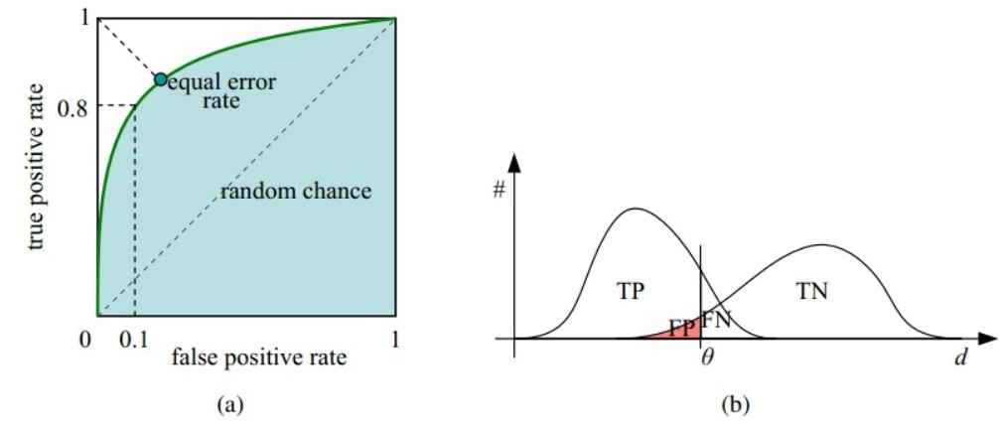
（a）中可以看出，在理想情况下，TPR应该接近1，FPR应该接近0。ROC曲线上的每一个点对应于一个threshold，对于一个分类器，每个threshold下会有一个TPR和FPR。比如Threshold最大时，TP=FP=0，对应于原点；Threshold最小时，TN=FN=0，对应于右上角的点(1,1)
（b）中显示，随着阈值$\theta$增加，TP和FP都减小，TPR和FPR也减小，ROC点向左下移动。
Python分类预测模型的特点
| 模型 | 模型特点 | 位于 |
|---|---|---|
| 逻辑回归 | 比较基础的线性分类模型，很多时候是简单有效的选择 | sklearn.linear_model |
| 决策树 | 强大的模型，可以用来回归、预测、分类等，而更具选取不同的核函数。模型可以是线性/非线性的 | sklearn.svm |
| 决策树 | 基于“分类讨论、逐步细化”思想的分类模型，模型直观，易解释。 | sklearn.tree |
| 随机森林 | 思想跟决策树类似，精度通常比决策树要高，缺点是由于其随机性，丧尸了决策树的可解释性。 | sklearn.ensemble |
| 朴素贝叶斯 | 基于概率思想的简单有效的分类模型，能够给出容易理解的概率解释 | sklearn.naive_bayes |
| 神经网络 | 具有强大的拟合能力，可以用于拟合、分类等，它有很多增强版本，如递归神经网络、卷积神经网络、自编码器等，这些是深度学习的模型基础 | Keras |
聚类分析
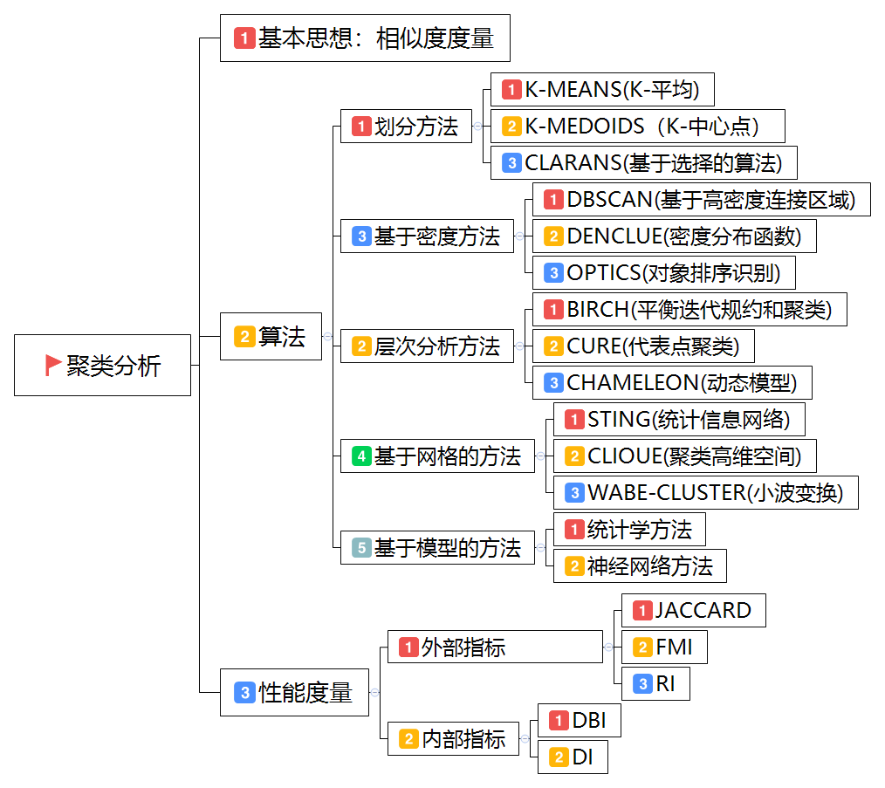
与分类不同，聚类分析是在没有给定划分类别的情况下，根据数据相似度进行样本分组的一种方法。与分类模型需要使用有类别标记样本构成的训练数据不同，聚类模型可建立在无类别标记的数据上，是一种非监督的学习算法。聚类的输入是一组未被标记的样本，聚类根据数据自身的距离或相似度将其划分为若干组，划分的原则是组内距离最小化而组间距离最大化。
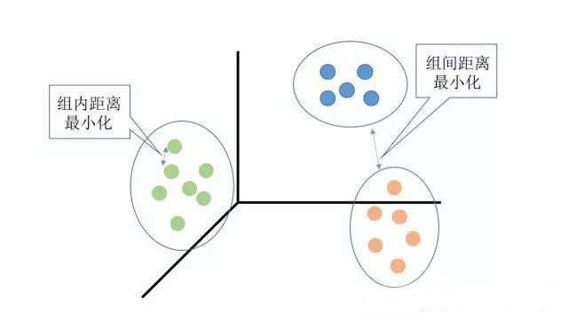
距离或相似度度量
根据数据特性的不同，可以采用不同的度量方法。一般而言，定义一个距离函数 $d(x,y)$, 需要满足下面几个准则：
- $d(x,x) = 0$ ，到自己的距离为0
- $d(x,y) >= 0$ ，距离非负
- $d(x,y) = d(y,x)$ ，对称性:如果A到B距离是 a，那么B到A的距离也应该是a
- $d(x,k)+ d(k,y) >= d(x,y)$ ，三角形法则：(两边之和大于第三边)
闵可夫斯基距离（连续属性）
闵可夫斯基距离（Minkowski distance）是衡量数值点之间距离的一种非常常见的方法，假设数值点 $P$ 和 $Q$ 坐标如下：
$$P=(x_{1},x_{1},…,x_{n}) and Q=(y_{1},y_{1},…,y_{n})$$
那么，闵可夫斯基距离定义为：
$$d(P,Q)=(\sum_{i=1}^{n}|x_{i}-y_{i}|^p)^\frac{1}{n}$$
- 当p=1，是曼哈顿距离（Manhattan distance）。
- 当p=2，是欧几里得距离（Euclidean distance）。
假设在曼哈顿街区乘坐出租车从 $P $点到$ Q $点，白色表示高楼大厦，灰色表示街道：
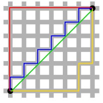
绿色的斜线表示欧几里得距离，在现实中是不可能的。其他三条折线表示了曼哈顿距离，这三条折线的长度是相等的。
当$p$趋近于无穷大时，闵可夫斯基距离转化成切比雪夫距离（Chebyshev distance）：
$$\lim_{p\rightarrow \infty}(\sum_{i=1}^{n}|x_{i}-y_{i}|^p)^\frac{1}{p}=\overset{n}{\underset{i=1}{max}}|x_{i}-y_{i}|$$
我们知道平面上到原点欧几里得距离（p = 2）为 1 的点所组成的形状是一个圆，当 p 取其他数值的时候呢？
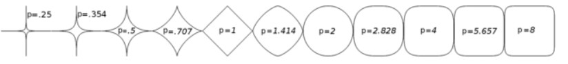
注意：当$ p < 1$ 时，闵可夫斯基距离不再符合三角形法则，举个例子：当 $p < 1$, (0,0) 到 (1,1) 的距离等于 $(1+1)^{1/p} > 2$, 而 (0,1) 到这两个点的距离都是1，因此不能取值小于1的p值作为距离度量。
闵可夫斯基距离比较直观，但是它与数据的分布无关，具有一定的局限性，如果 $x $方向的幅值远远大于 $y $方向的值，这个距离公式就会过度放大 $x $维度的作用。所以，在计算距离之前，我们可能还需要对数据进行 z-transform 处理，即减去均值，除以标准差：
$$(x_{1}-y_{1})\rightarrow(\frac{x_{1}-\mu_{x}}{\sigma_{x}},\frac{y_{1}-\mu_{y}}{\sigma_{y}})$$
- $\mu$：该维度上的均值。
- $\sigma$：该维度上的标准差。
可以看到，上述处理开始体现数据的统计特性了。这种方法在假设数据各个维度不相关的情况下利用数据分布的特性计算出不同的距离。如果维度相互之间数据相关（例如：身高较高的信息很有可能会带来体重较重的信息，因为两者是有关联的，此距离就失效。
向量内积（离散向量化属性）
量内积是线性代数里最为常见的计算，实际上它还是一种有效并且直观的相似性测量手段。向量内积的定义如下：$$Inner(x,y)=<x,y>=\sum_{i}x_{i}y_{i}$$向量内积的结果是没有界限的，一种解决办法是除以长度之后再求内积，这就是应用十分广泛的余弦相似度（Cosine similarity）：$$CosSim(x,y)=\frac{\sum_{i}x_{i}y_{i}}{\sqrt{\sum_{i}x_{i}^2}\sqrt{\sum_{i}y_{i}^2}}=\frac{<x,y>}{||x||||y||}$$ 余弦相似度与向量的幅值无关，只与向量的方向相关.需要注意一点的是，余弦相似度受到向量的平移影响，上式如果将 x 平移到 x+1, 余弦值就会改变。怎样才能实现平移不变性？这就是下面要说的皮尔逊相关系数（Pearson correlation），有时候也直接叫相关系数:
$$Corr(x,y)=\frac{\sum_{i}(x_{i}-\bar x)(y_{i}-\bar y)}{\sqrt{\sum_{i}(x_{i}-\bar x)^2}\sqrt{\sum_{i}(y_{i}-\bar y)^2}}=CosSim(x-\bar x)(y-\bar y)$$ 皮尔逊相关系数具有平移不变性和尺度不变性，计算出了两个向量（维度）的相关性。不过，一般我们在谈论相关系数的时候，将 x 与 y 对应位置的两个数值看作一个样本点，皮尔逊系数用来表示这些样本点分布的相关性。
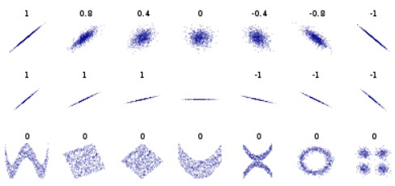
常用的聚类分析算法
| 算法名称 | 算法描述 |
|---|---|
| K-Means | K-均值聚类也称为快速聚类法，在最小化误差函数的基础上将数据划分为预定的类数K。该算法原理简单并便于处理大量数据。 |
| K-中心点 | K-均值算法对孤立点的敏感性，K-中心点算法不采用簇中对象的平均值作为簇中心，而选用簇中离平均值最佳的对象作为簇中心。 |
| 系统聚类 | 系统聚类也称为层次聚类，分类的单位由高到低呈树形结构，且所处的位置越低，其所包含的对象就越少，但这些对象间的共同特征越多。该聚类方法只适合在小数据量的时候使用，数据量大的时候速度会非常慢。 |
聚类分析算法评价
聚类分析仅根据样本数据本身将样本分组。其目标是组内的对象相互之间是相似的（相关的），而不同组中的对象时不同的（不相关的）。组内的相似性越大，组间差别越大，聚类效果就越好。
purity评价法
purity方法是极为简单的一种聚类评价方法，只需计算正确聚类占总数的比例。
$$purity(X,Y)=\frac{1}{n}\sum_{k}max|x_{k}\bigcap y_{k}|$$其中，$x=(x_{1},x_{2},…,x_{k})$是聚类的集合。$x_{k}$表示第$k$个聚类的集合。$y=(y_{1},y_{2},…,y_{k})$表示需要被聚类的集合，$y_{i}$表示第$i$个聚类对象。$n$表示被聚类集合对象的总数。
RI评价法
实际上，这是一种用排列组合原理来对聚类进行评价的手段，RI评价公式如下：$$RI=\frac{R+W}{R+M+D+W}$$其中，
- R是指被聚在一类的两个对象被正确的分类。
- W是指不应该被聚在一类的两个对象被正确分开。
- M指不应该放在一类的对象被错误的放在了一类。
- D值不应该分开的对象被错误的分开。
F值评价法
这是基于RI方法衍生出的一个方法，F评价公式如下：
$$F_{\alpha}=\frac{(1+\alpha^{2})pr}{\alpha^2p+r}$$
其中，$p=\frac{R}{R+M},r=\frac{R}{R+D}$
实际上$RI$方法就是把准确率$p$和召回率$r$看得同等重要，事实上，有时候我们可能需要某一特性更多一点，这时候就适合使用$F$值方法。
Python主要聚类分析算法
| 对象名 | 函数功能 | 所属工具箱 |
|---|---|---|
| KMeans | K均值 | sklearn.cluster |
| AffinityPropagation | 吸引力传播聚类，2007提出，几乎优于所有其他方法，不需要指定聚类数，但运行效率较低 | sklearn.cluster |
| MeanShift | 均值漂移聚类算法 | Clustering |
| Spectral | 谱聚类，具有效果比均值好，速度比K均值快等特点 | sklearn.cluster |
| AgglomeartiveClustering | 层次聚类，给出一棵聚类层次树 | sklearn.cluster |
| DBSCAN | 具有噪声的基于密度的聚类方法 | sklearn.cluster |
| BIRCH | 综合的层次聚类算法，可处理大规模数据的聚类 | sklearn.cluster |
关联规则
关联规则分析也称购物篮分析，最早是为了发现超市销售数据库中不同的商品之间的关联关系。例如，一个超市的经理想要更多地了解顾客的购物习惯，比如“哪组商品可能会在一次购物中同时购买？”或者“某顾客购买了个人电脑，那该顾客三个月后购买数码相机的购率有多大？”他可能会发现如果购买了面包的顾客同时非常有可能会购买牛奶，这就导出了一条关联规则“面包=>牛奶”，其中面包称为规则的前项，而牛奶称为后项。通过对面包降低售价进行促销，而适当提高牛奶的售价，关联销售的牛奶就有可能增加超市整体的利润。
关联规则分析是数据挖掘中最活跃的研究方法之一，目的是在一个数据集中找出各项之间的关联关系，而这种关系并没有在数据中直接表示出来。
常用关联规则算法
| 算法名称 | 算法描述 |
|---|---|
| Apriori | 关联规则最常用也是最经典的挖掘频繁项集的算法，其核心思想是通过连接产生候选项及其支持度然后通过剪枝生成频繁项集。 |
| FP-Tree | 针对Apriori算法的固有的多次扫描事物数据集的缺陷，提出的不产生候选频繁项集的方法。Apriori和FP-Tree都是寻找频繁项集的算法。 |
| Eclat算法 | Eclat算法是一种深度优先算法，采用垂直数据表示形式，在概念格理论的基础上利用基于前缀的等价关系将搜索空间划分为较小的子空间。 |
| 灰色关联法 | 分析和确定各因素之间的影响程度或是若干个因素（子序列）对主因素（母序列）的贡献度而进行的一种分析方法。 |
关联规则和频繁项集
- 关联规则的一般形式
项集A、B同时发生的概率称为关联规则的支持度（也称相对支持度）$$Support(A=>B)=P(A\bigcup B)$$项集A发现，则项集B发现的概率为关联规则的置信度。
$$Confidence(A=>B)=P(B|A)$$ - 最小支持度和最小置信度
最小支持度是用户或专家定义的衡量支持度的一个阈值，表示项目集在统计意义上的最低重要性；
最小置信度是用户或专家定义衡量置信度的一个阈值，表示关联规则的最低可靠性。
同时满足最小支持度阈值和最小置信度阈值的规则称为强规则。 - 项集
项集是项的集合。包含$k$个项的项集称为$k$项集，如集合{牛奶，麦片，糖}是一个3项集。项集出现频率是所有包含项集的事物计数，又称作绝对支持度或支持度计数。如果项集I的相对支持度满足预定义的最小支持度阈值，则I是频繁项集。频繁$k$项集通常记作$k$。 - 支持度计数
项集A的支持度计数是事物数据集中包含项集A的事物个数，简称为项集的频率或计数。
已知项集的支持度计数，则规则A=>B的支持度和置信度很容易从所有事物计数、项集A和项集$A\bigcup B$的支持度计数推出。$$Support(A=>B)=\frac{Support-count(A\bigcap B)}{Total-count(A)}$$$$Confidence(A=>B)=P(A|B)=\frac{Support-count(A\bigcap B)}{Support-count(A)}$$
也就是说，一旦得到所有事物个数，A,B和$A\bigcap B$的支持度计数，就可以导出对应的关联规则A=>B和B=>A，并可以检查该规则是否是强规则。
时序模式
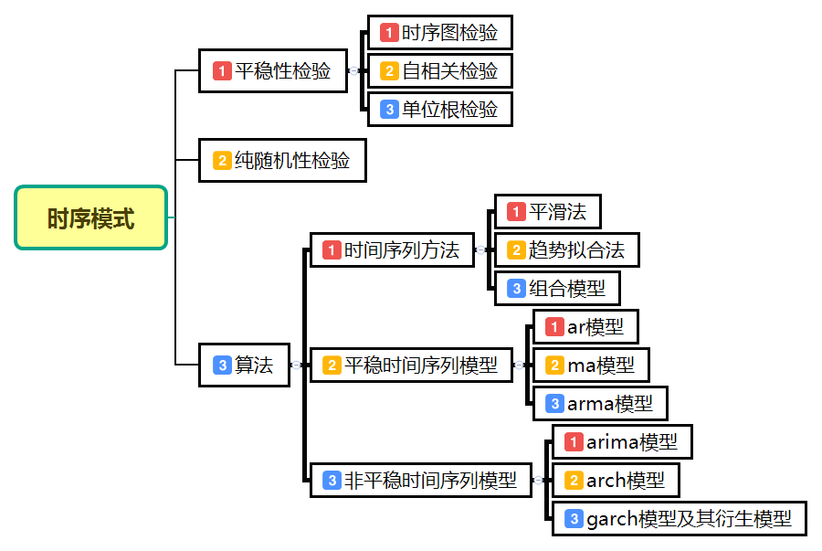
常用按时间顺序排列的一组随机变量$X_{1},X_{2},…,X_{t}$来表示一个随机时间的时间序列，简记为$X_{t}$：用$x_{1},x_{2},…,x_{n}$或${x_{t},t=1,2,…,n}$表示该随机序列的$n$个有序观察值，称之为序列长度为$n$的观察值序列。
时间训练分析的目的就是给定一个已被观测了的时间序列，预测该序列的未来值。
常用时间序列模型
| 模型名称 | 描述 |
|---|---|
| 平滑法 | 平滑法常用于趋势分析和预测，利用修匀技术，削弱短期随机波动对序列的影响，是序列平滑化。根据所用平滑技术的不同，可具体分为移动平均和指数平滑化。 |
| 趋势拟合法 | 趋势拟合法把时间作为自变量，相应的序列观察值作为因变量，建立回归模型。根据序列的特征，可具体分为线性拟合和曲线拟合。 |
| 组合模型 | 时间序列的变化主要受到长期趋势（$T$）、季节变动（$S$）、周期变动（$C$）和不规则变动（$\varepsilon$）这4个因素的影响。根据序列的特点，可以构建加法模型和乘法模型加法模型：$$x_{t}=T_{t}+S_{t}+C_{t}+\varepsilon_{t}$$乘法模型：$$x_{t}=T_{t}\times S_{t}\times C_{t}\times \varepsilon_{t}$$ |
| AR模型 | $$x_{t}=\phi_{0}+\phi_{1}x_{t-1}+\phi_{2}x_{t-2}+…+\phi_{p}x_{t-p}+\varepsilon_{t}$$以前p期的序列值$x_{t-1},x_{t-2},…,x_{t-p}$为自变量、随机变量$X_{t}$的取值$x_{t}$为因变量建立线性回归模型 |
| MA模型 | $$x_{t}=\mu+\varepsilon_{t}-\theta_{1}\varepsilon_{t-1}-\theta_{2}\varepsilon_{t-2}-…-\theta_{q}\varepsilon_{t-q}$$随机变量$X_{t}$的取值$x_{t}$与以前各期的序列值无关，建立$x_{t}$与前$q$期的随机扰动$\varepsilon_{t-1},\varepsilon_{t-2},…,\varepsilon_{t-q}$ |
| ARMA模型 | $$x_{t}=\phi_{0}+\phi_{1}x_{t-1}+\phi_{2}x_{t-2}+…+\phi_{p}x_{t-p}+\varepsilon_{t}-\theta_{1}\varepsilon_{t-1}-\theta_{2}\varepsilon_{t-2}-…-\theta_{q}\varepsilon_{t-q}$$随机变量$X_{t}$的取值$x_{t}$不仅与以前$p$期的序列值有关，还与前$q$期的随机扰动有关 |
| ARIMA模型 | 许多非平稳序列差分后会显示出平稳序列的性质，称这个非平稳序列为差分平稳序列。对差分平稳序列可以使用ARIMA模型进行拟合 |
| ARCH模型 | ARCH模型能够准确地模拟时间序列变量的波动性的变化，适用于序列具有异方差性并且异方差函数短期自相关 |
| GARCH模型及其衍生模型 | GARCH模型称为广义ARCH模型，是ARCH模型的拓展。相比于ARCH模型，GARCH模型及其衍生模型更能反映实际序列中长期记忆性、信息的非对称性等性质。 |
时间序列的预处理
拿到一个观测值序列后，首先对它的纯随机性和平稳性进行检验，这两个重要的检验称为序列的预处理。根据检验的结果可以将序列氛围不同的类型，对不同类型的序列会采用不同分析方法。
对于纯随机序列，又称为白噪声序列，序列的各项之间没有任何相关关系，序列在进行完全无序的随机波动，可终止对该序列的分析。白噪声序列是没有信息可以提取的平稳序列。
对于非平稳非白噪声序列，它的均值和方差是常数，现已有一套非常成熟的平稳序列的建模方法。通常是建立一个线性模型来拟合该序列的发展，借此提取该序列的有用信息。ARMA模型时最常用的平稳序列拟合模型。
对于非平稳序列，由于它的均值和方差不稳定，处理方法一般是将其转变为平稳序列，这样就可以应用有关平稳序列差分运算后具有平稳性，则该序列为差分平稳序列，可以使用ARIMA模型进行分析。
平稳性检验
平稳时间序列的定义
对于随机变量$X$,可以计算其均值（数学期望）$\mu$、方差$\sigma^{2}$；对于两个随机变量X和Y，可以计算$X,Y$的协方差$$cov(X,Y)=E[(X-\mu_{X})(Y-\mu_{Y})]$$ 和相关系数 $$\rho (X,Y)=\frac{cov(X,Y)}{\sigma ^{X}\sigma ^{Y}}$$,它们度量了两个不同事件之间的相互影响程度。
对于时间序列${X_{t},t\in T}$,任意时刻的序列值$X_{t}$都是一个随机变量，每一个随机变量，每一个随机变量都会有均值和方差，记$X_{t}$的均值为$\mu_{t}$，方差为$\sigma_{t}$;任取$t,s\in T$,定义序列${X_{t}}$的自协方差函数$$\gamma(t,s)=E[(X_{t}-\mu_{t})(Y_{s}-\mu_{s})]$$和自相关系数$$\rho(t,s)=\frac{cov(X_{t},Y_{t})}{\sigma_{t}\sigma_{s}}$$之所以称它们为自协方差函数和自相关函数，是因为他们衡量的是同一个事件在两个不同时期（时刻t和s）之间的相关程度，形象地讲就是度量自己过去的行为对自己现在的影响。平稳性的检验
对序列的平稳性的检验有两种方法，- 一种是根据时序图和自相关图的特征作出判断的图检验，该方法操作简单、应用广泛，缺点是带有主观性；
- 另一种是构造检验统计量进行检验的方法，目前最常用的方法是单位根检验。
纯随机性检验
如果一个序列是纯随机序列，那么它的序列值之间应该没有任何关系，即满足$\gamma(k)=0,k\neq0$这是一种理论上才会出现的假想状态，实际上纯随机序列的样本自相关系数不会绝对为零，但是很接近零，并在零附近随机波动。
纯随机性检验也称白噪声检验，一般是构造检验统计量来检验序列的纯随机性，常用的检验统计量$Q$统计量、$LB$统计量，由于样本个延迟期数的自相关系数可以计算得到检验统计量，然后计算出对应的$p$的值，如果$p$的值显著大于显著性水平$\alpha$,则表示该序列不能拒绝纯随机的原假设，可以停止对该序列的分析。
Python主要时序模式算法
| 函数名 | 函数功能 | 所属工具箱 |
|---|---|---|
| acf() | 计算自相关系数 | statsmodels.tsa.stattools |
| plot_acf() | 画自相关系数图 | statsmodels.graphics.tsaplots |
| pacf() | 画偏相关系数图 | statsmodels.graphics.tsaplots |
| adfuller() | 对观测值序列进行单位根检验 | statsmodels.tsa.stattools |
| diff() | 对观测值序列进行差分计算 | Pandas对象自带的方法 |
| ARIMA() | 创建一个ARIMA时序模型 | statsmodels.tsa.arima_model |
| summary() | ARIMA模型对象报告 | ARIMA模型对象自带方法 |
| aic/bic/hqic() | 计算ARIMA模型的AIC/BIC/HQIC指标值 | ARIMA模型对象自带方法 |
| forecast() | 应用构建的时序模型进行预测 | ARIMA模型对象自带方法 |
| acor_ljungbox() | Ljung-Box检验，检验是否是白噪声 | statsmodels.stats.diagnoostic |
离群点检测
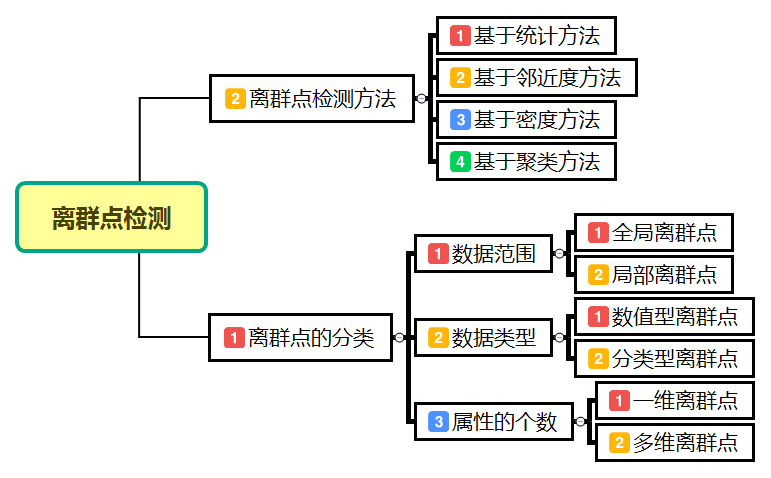
离群点检测是数据挖掘中重要的一部分，它的任务是发现与大部分其他对象显著不同对象。大部分数据挖掘方法都将这种差异信息视为噪声而丢弃，然而在一些应用中，罕见的数据可能蕴含着更大的研究价值。
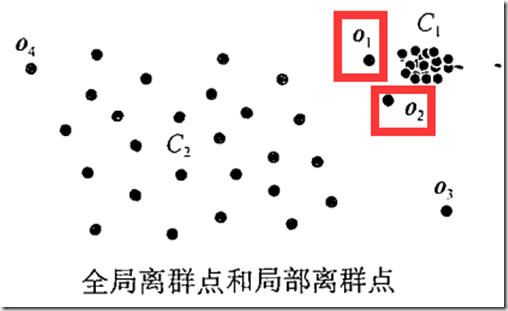
离群点检测已经被广泛应用于电信和信用卡的诈骗检测、贷款审批、电子商务、网络入侵和天气预报等领域。例如，可以利用离群点检测分析运动员的统计数据，以发现异常的运动员。
- 离群点的成因
离群点主要成因有：数据来源于不同的类、自然变异、数据测量和搜集误差。 - 离群点的类型
- 全局离群点和局部离群点
- 数据型离群点和分类型离群点
- 一维离群点和多维离群点
常用离群点检测方法
| 离群点检测方法 | 方法描述 | 方法 |
|---|---|---|
| 基于统计 | 大部分的基于统计的离群点检测方法是构建一个概率分布模型，并计算对象符合模型概率，把具有低概率的对象视为离群点。 | 基于统计模型的利群带你检测方法的前提是必须知道数据集服从什么分布；对于高维数据，检验效果可能很差 |
| 基于邻近度 | 通常可以在数据对象之间定义邻近性度量，把远离大部分点的对象视为离群点 | 简单，二维或三维的数据可以做散点图观察；大数据集不适用；对参数选择敏感；具有全局阈值，不能处理具有不同密度区域的数据集 |
| 基于密度 | 考虑数据集可能存在不同密度区域这一事实，从基于密度的观点分析，离群点是在低密度区域中的对象。一个对象的离群点得分是该对象周围密度的逆。 | 给出了对象时离群点的定量度量，并且即使数据具有不同的区域也能够很好处理；大数据集不适用；参数选择是困难的 |
| 基于聚类 | 一种利用聚类检测离群点的方法是丢弃远离其他簇的小簇；另一种更系统的方法，首先聚类所有对象，然后评估对象属于簇的程度（离群点得分） | 基于聚类技术发现离群点可能是高度有效的；聚类算法产生簇的质量对该算法产生的离群点的质量影响非常大。 |